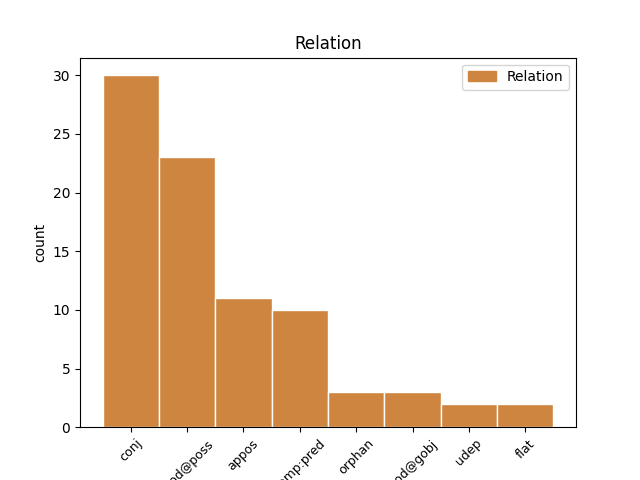
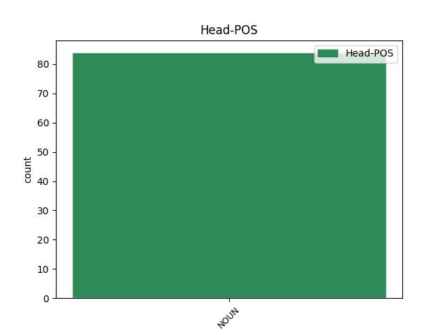
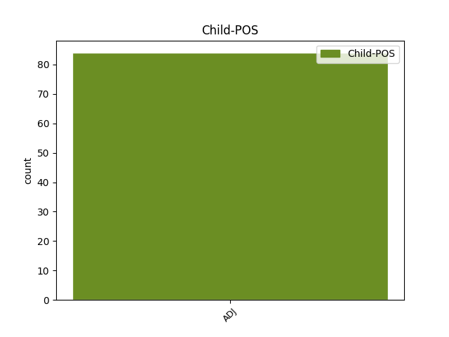

Distribution of features within this leaf



Agreement Rules sorted by frequency.
- When the dependent token is the conjunct(conj) of the head token, and the head token is NOUN and the dependent token is ADJ.
1 Säpon _ _ _ _ 0 _ _ _
2 mukaan _ _ _ _ 0 _ _ _
3 väkivaltaisten _ _ _ _ 0 _ _ _
4 hyökkäysten _ _ _ _ 0 _ _ _
5 kohteeksi _ _ _ _ 0 _ _ _
6 ovat _ _ _ _ 0 _ _ _
7 joutuneet _ _ _ _ 0 _ _ _
8 ainakin _ _ _ _ 0 _ _ _
9 Ruotsidemokraatit _ _ _ _ 0 _ _ _
10 , _ _ _ _ 0 _ _ _
11 Maltillinen _ _ _ _ 0 _ _ _
12 kokoomus kokoomus NOUN N Case=Nom|Number=Sing 0 _ _ _
13 ja _ _ _ _ 0 _ _ _
14 Kansanpuolue _ _ _ _ 0 _ _ _
15 liberaalit liberaali ADJ A Case=Nom|Degree=Pos|Number=Plur 12 conj _ SpaceAfter=No
16 . _ _ _ _ 0 _ _ _
1 Sampsa _ _ _ _ 0 _ _ _
2 Tuomala _ _ _ _ 0 _ _ _
3 ( _ _ _ _ 0 _ _ _
4 s. _ _ _ _ 0 _ _ _
5 29. _ _ _ _ 0 _ _ _
6 lokakuuta _ _ _ _ 0 _ _ _
7 1989 _ _ _ _ 0 _ _ _
8 , _ _ _ _ 0 _ _ _
9 Kotka _ _ _ _ 0 _ _ _
10 ) _ _ _ _ 0 _ _ _
11 on _ _ _ _ 0 _ _ _
12 alun _ _ _ _ 0 _ _ _
13 perin _ _ _ _ 0 _ _ _
14 kotkalainen _ _ _ _ 0 _ _ _
15 näyttelijä _ _ _ _ 0 _ _ _
16 , _ _ _ _ 0 _ _ _
17 jonka _ _ _ _ 0 _ _ _
18 tunnetuin _ _ _ _ 0 _ _ _
19 rooli _ _ _ _ 0 _ _ _
20 on _ _ _ _ 0 _ _ _
21 Sampo _ _ _ _ 0 _ _ _
22 Kaukovaara _ _ _ _ 0 _ _ _
23 suomalaisessa _ _ _ _ 0 _ _ _
24 saippua/draama-sarjassa saippua/draama#sarja NOUN N Case=Nom|Number=Sing 0 _ _ _
25 Salatut salattu ADJ A Case=Nom|Degree=Pos|Number=Plur 24 appos _ _
26 elämät _ _ _ _ 0 _ _ _
27 . _ _ _ _ 0 _ _ _
1 * _ _ _ _ 0 _ _ _
2 22. _ _ _ _ 0 _ _ _
3 elokuuta _ _ _ _ 0 _ _ _
4 2009 _ _ _ _ 0 _ _ _
5 : _ _ _ _ 0 _ _ _
6 Aliupseeriliitto _ _ _ _ 0 _ _ _
7 yllättyi _ _ _ _ 0 _ _ _
8 Julkisten julkinen ADJ A Case=Gen|Degree=Pos|Derivation=Inen|Number=Plur 11 mod@poss _ _
9 ja _ _ _ _ 0 _ _ _
10 hyvinvointialojen _ _ _ _ 0 _ _ _
11 liiton liitto NOUN N Case=Gen|Number=Sing 0 _ _ _
12 suurtuesta _ _ _ _ 0 _ _ _
13 SDP:lle _ _ _ _ 0 _ _ _
1 ( _ _ _ _ 0 _ _ _
2 6 _ _ _ _ 0 _ _ _
3 ) _ _ _ _ 0 _ _ _
4 On _ _ _ _ 0 _ _ _
5 tarpeen _ _ _ _ 0 _ _ _
6 muuttaa _ _ _ _ 0 _ _ _
7 lentoliikenteen _ _ _ _ 0 _ _ _
8 harjoittajien _ _ _ _ 0 _ _ _
9 korvausvastuusta _ _ _ _ 0 _ _ _
10 onnettomuustapauksissa _ _ _ _ 0 _ _ _
11 9 _ _ _ _ 0 _ _ _
12 päivänä _ _ _ _ 0 _ _ _
13 lokakuuta _ _ _ _ 0 _ _ _
14 1997 _ _ _ _ 0 _ _ _
15 annettu _ _ _ _ 0 _ _ _
16 neuvoston _ _ _ _ 0 _ _ _
17 asetus _ _ _ _ 0 _ _ _
18 ( _ _ _ _ 0 _ _ _
19 EY _ _ _ _ 0 _ _ _
20 ) _ _ _ _ 0 _ _ _
21 N:o _ _ _ _ 0 _ _ _
22 2027/97 _ _ _ _ 0 _ _ _
23 ( _ _ _ _ 0 _ _ _
24 5 _ _ _ _ 0 _ _ _
25 ) _ _ _ _ 0 _ _ _
26 sen _ _ _ _ 0 _ _ _
27 saattamiseksi saattaminen NOUN N Case=Tra|Derivation=Minen|Number=Sing 0 _ _ _
28 Montrealin _ _ _ _ 0 _ _ _
29 yleissopimuksen _ _ _ _ 0 _ _ _
30 mukaiseksi mukainen ADJ A Case=Tra|Degree=Pos|Derivation=Inen|Number=Sing 27 comp:pred _ _
31 ja _ _ _ _ 0 _ _ _
32 luoda _ _ _ _ 0 _ _ _
33 näin _ _ _ _ 0 _ _ _
34 korvausvastuuta _ _ _ _ 0 _ _ _
35 kansainvälisissä _ _ _ _ 0 _ _ _
36 ilmakuljetuksissa _ _ _ _ 0 _ _ _
37 koskeva _ _ _ _ 0 _ _ _
38 yhtenäinen _ _ _ _ 0 _ _ _
39 järjestelmä _ _ _ _ 0 _ _ _
40 . _ _ _ _ 0 _ _ _
1 Gorbatšovin _ _ _ _ 0 _ _ _
2 mukaan _ _ _ _ 0 _ _ _
3 Putin _ _ _ _ 0 _ _ _
4 on _ _ _ _ 0 _ _ _
5 tuonut _ _ _ _ 0 _ _ _
6 Venäjälle _ _ _ _ 0 _ _ _
7 vakautta _ _ _ _ 0 _ _ _
8 Boris _ _ _ _ 0 _ _ _
9 Jeltsinin _ _ _ _ 0 _ _ _
10 kauden _ _ _ _ 0 _ _ _
11 jälkeen _ _ _ _ 0 _ _ _
12 , _ _ _ _ 0 _ _ _
13 estänyt _ _ _ _ 0 _ _ _
14 maan _ _ _ _ 0 _ _ _
15 täydellisen _ _ _ _ 0 _ _ _
16 romahduksen _ _ _ _ 0 _ _ _
17 ja _ _ _ _ 0 _ _ _
18 palauttanut _ _ _ _ 0 _ _ _
19 valtionhallinnon _ _ _ _ 0 _ _ _
20 sekä _ _ _ _ 0 _ _ _
21 aloittanut _ _ _ _ 0 _ _ _
22 sosiaalisten sosiaalinen ADJ A Case=Gen|Degree=Pos|Derivation=Inen|Number=Plur 25 mod@gobj _ _
23 ja _ _ _ _ 0 _ _ _
24 talousongelmien _ _ _ _ 0 _ _ _
25 selvittämisen selvittäminen NOUN N Case=Gen|Derivation=Minen|Number=Sing 0 _ _ _
26 . _ _ _ _ 0 _ _ _
Disagree Examples:
1 Toukokuun toukokuu NOUN N Case=Gen|Number=Sing 0 _ _ _
2 ensimmäisestä ensimmäinen ADJ Num Case=Ela|Derivation=Inen|Number=Sing|NumType=Ord 1 flat _ _
3 päivästä _ _ _ _ 0 _ _ _
4 alkaen _ _ _ _ 0 _ _ _
5 marraskuun _ _ _ _ 0 _ _ _
6 1. _ _ _ _ 0 _ _ _
7 päivä _ _ _ _ 0 _ _ _
8 2010 _ _ _ _ 0 _ _ _
9 tai _ _ _ _ 0 _ _ _
10 sitä _ _ _ _ 0 _ _ _
11 aikaisemmin _ _ _ _ 0 _ _ _
12 rekisteröityneet _ _ _ _ 0 _ _ _
13 voivat _ _ _ _ 0 _ _ _
14 toistaa _ _ _ _ 0 _ _ _
15 jokaista _ _ _ _ 0 _ _ _
16 kappaletta _ _ _ _ 0 _ _ _
17 korkeintaan _ _ _ _ 0 _ _ _
18 5 _ _ _ _ 0 _ _ _
19 kertaa _ _ _ _ 0 _ _ _
20 . _ _ _ _ 0 _ _ _
1 Olin _ _ _ _ 0 _ _ _
2 itse _ _ _ _ 0 _ _ _
3 ilmeisen _ _ _ _ 0 _ _ _
4 alitajuisesti _ _ _ _ 0 _ _ _
5 pessimistisenä pessimistinen ADJ A Case=Ess|Degree=Pos|Derivation=Inen|Number=Sing 6 udep _ _
6 liikkeellä liike NOUN N Case=Ade|Number=Sing 0 _ _ _
7 , _ _ _ _ 0 _ _ _
8 koska _ _ _ _ 0 _ _ _
9 tulin _ _ _ _ 0 _ _ _
10 autolla _ _ _ _ 0 _ _ _
11 eikä _ _ _ _ 0 _ _ _
12 skumppaa _ _ _ _ 0 _ _ _
13 ollut _ _ _ _ 0 _ _ _
14 kylmässä _ _ _ _ 0 _ _ _
15 . _ _ _ _ 0 _ _ _
1 - _ _ _ _ 0 _ _ _
2 On _ _ _ _ 0 _ _ _
3 ilmeisesti _ _ _ _ 0 _ _ _
4 tosi _ _ _ _ 0 _ _ _
5 outoa _ _ _ _ 0 _ _ _
6 alkaa _ _ _ _ 0 _ _ _
7 höpötellä _ _ _ _ 0 _ _ _
8 tuntemattomille _ _ _ _ 0 _ _ _
9 ystävällisessä _ _ _ _ 0 _ _ _
10 hengessä henki NOUN N Case=Ine|Number=Sing 0 _ _ _
11 ja _ _ _ _ 0 _ _ _
12 selvänä selvä ADJ A Case=Ess|Degree=Pos|Number=Sing 10 conj _ SpaceAfter=No
13 . _ _ _ _ 0 _ _ _
1 Ideana _ _ _ _ 0 _ _ _
2 näissä _ _ _ _ 0 _ _ _
3 on _ _ _ _ 0 _ _ _
4 sekoittaa _ _ _ _ 0 _ _ _
5 jokin _ _ _ _ 0 _ _ _
6 tuorejuusto _ _ _ _ 0 _ _ _
7 ( _ _ _ _ 0 _ _ _
8 Valion _ _ _ _ 0 _ _ _
9 ohjeessa _ _ _ _ 0 _ _ _
10 sinihometuorejuusto _ _ _ _ 0 _ _ _
11 ) _ _ _ _ 0 _ _ _
12 ja _ _ _ _ 0 _ _ _
13 juustoraaste juusto#raaste NOUN N Case=Nom|Number=Sing 0 _ _ _
14 ( _ _ _ _ 0 _ _ _
15 Valion _ _ _ _ 0 _ _ _
16 ohjeessa _ _ _ _ 0 _ _ _
17 kahta _ _ _ _ 0 _ _ _
18 erilaista erilainen ADJ A Case=Par|Degree=Pos|Derivation=Lainen|Number=Sing 13 appos _ SpaceAfter=No
19 ) _ _ _ _ 0 _ _ _
20 seokseksi _ _ _ _ 0 _ _ _
21 ja _ _ _ _ 0 _ _ _
22 pyöritellä _ _ _ _ 0 _ _ _
23 siitä _ _ _ _ 0 _ _ _
24 käsin _ _ _ _ 0 _ _ _
25 pikkuisia _ _ _ _ 0 _ _ _
26 palloja _ _ _ _ 0 _ _ _
27 ja _ _ _ _ 0 _ _ _
28 kieritellä _ _ _ _ 0 _ _ _
29 ne _ _ _ _ 0 _ _ _
30 sitten _ _ _ _ 0 _ _ _
31 jossakin _ _ _ _ 0 _ _ _
32 koristeseoksessa _ _ _ _ 0 _ _ _
33 esim. _ _ _ _ 0 _ _ _
34 unikon- _ _ _ _ 0 _ _ _
35 tai _ _ _ _ 0 _ _ _
36 seesaminsiemenissä _ _ _ _ 0 _ _ _
37 , _ _ _ _ 0 _ _ _
38 persiljasilpussa _ _ _ _ 0 _ _ _
39 , _ _ _ _ 0 _ _ _
40 pienissä _ _ _ _ 0 _ _ _
41 paprikanpalasissa _ _ _ _ 0 _ _ _
42 ( _ _ _ _ 0 _ _ _
43 tai _ _ _ _ 0 _ _ _
44 kurkkun _ _ _ _ 0 _ _ _
45 tai _ _ _ _ 0 _ _ _
46 retiisinpalasissa _ _ _ _ 0 _ _ _
47 ) _ _ _ _ 0 _ _ _
48 , _ _ _ _ 0 _ _ _
49 ruohosipulisilpussa _ _ _ _ 0 _ _ _
50 , _ _ _ _ 0 _ _ _
51 pähkinä- _ _ _ _ 0 _ _ _
52 tai _ _ _ _ 0 _ _ _
53 mantelirouheessa _ _ _ _ 0 _ _ _
54 , _ _ _ _ 0 _ _ _
55 pinjansiemenissä _ _ _ _ 0 _ _ _
56 , _ _ _ _ 0 _ _ _
57 rouhituissa _ _ _ _ 0 _ _ _
58 pistaaseissa _ _ _ _ 0 _ _ _
59 tai _ _ _ _ 0 _ _ _
60 vaikkapa _ _ _ _ 0 _ _ _
61 suklaarouheessa _ _ _ _ 0 _ _ _
62 ja _ _ _ _ 0 _ _ _
63 pallerot _ _ _ _ 0 _ _ _
64 ovat _ _ _ _ 0 _ _ _
65 valmiita _ _ _ _ 0 _ _ _
66 nautittaviksi _ _ _ _ 0 _ _ _
67 vaikka _ _ _ _ 0 _ _ _
68 salaattipöydän _ _ _ _ 0 _ _ _
69 yhtenä _ _ _ _ 0 _ _ _
70 osana _ _ _ _ 0 _ _ _
71 tai _ _ _ _ 0 _ _ _
72 pikkunaposteltavana _ _ _ _ 0 _ _ _
73 ihan _ _ _ _ 0 _ _ _
74 sellaisenaan _ _ _ _ 0 _ _ _
75 hyvässä _ _ _ _ 0 _ _ _
76 seurassa _ _ _ _ 0 _ _ _
77 hyvän _ _ _ _ 0 _ _ _
78 juoman _ _ _ _ 0 _ _ _
79 kera _ _ _ _ 0 _ _ _
80 . _ _ _ _ 0 _ _ _
1 MIES _ _ _ _ 0 _ _ _
2 : _ _ _ _ 0 _ _ _
3 Ei _ _ _ _ 0 _ _ _
4 , _ _ _ _ 0 _ _ _
5 kun _ _ _ _ 0 _ _ _
6 sitten _ _ _ _ 0 _ _ _
7 me _ _ _ _ 0 _ _ _
8 ollaan _ _ _ _ 0 _ _ _
9 neljän _ _ _ _ 0 _ _ _
10 parhaan hyvä ADJ A Case=Gen|Degree=Sup|Number=Sing 11 mod@poss _ _
11 joukossa joukko NOUN N Case=Ine|Number=Sing 0 _ _ _
12 . _ _ _ _ 0 _ _ _